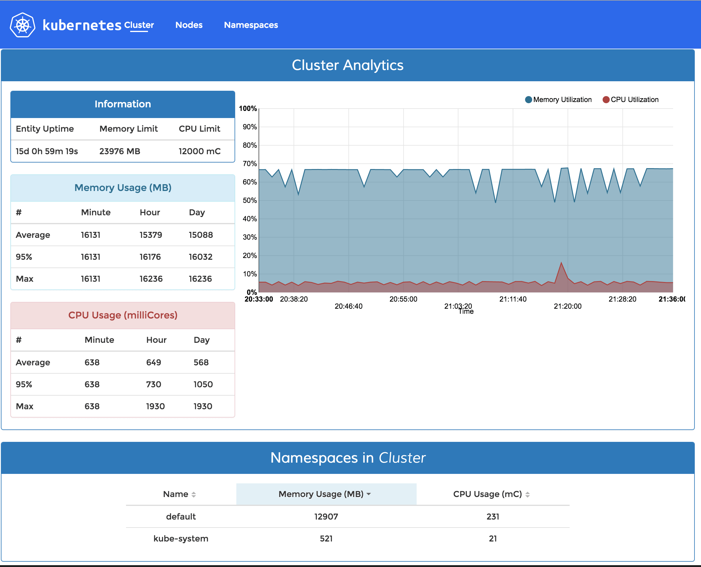

infrastructure

In previous post I finished description of installation of kubernetes cluster on bare-metal hardware. At this point we should be able to communicate with it using kubectl
In this post I will go through installation of basic services to use and monitor cluster. For example DNS, heapster and different dashboards. Deploying addon services Kubernetes comes with several very useful addons, available on its github, either in kubernetes or in contrib.
First thing you need if you’re using Kubernetes - Docker registry. Because its all about containers. So in this post I will show how to deploy your own registry inside Kubernetes cluster, with UI and tls, with basic http authentication. I’m going to use cluster I deployed in previous post. As short recap - we have Kubernetes cluster with few nodes, and external loadbalancer (ubuntu based machine with nginx) Get ssl certificates from Let’s Encrypt To have proper registry opened to the web, we need to get ssl certificates.
I started trying to switch to Docker about a year ago, but all tools were kind of not-production-ready. With docker-compose it was unreal to scale containers without restart. Deis looked like a black box with a lot of magic. Then Tutum appeared and it was awesome, really, it was the first working solution. So I switched to it. It was fine most of the time, yes it had problems with networking, yes it was annoying to copy-paste all environment variables into each container, but it was in beta, and it was free.